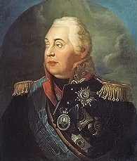

Кутузов Михаил Илларионович |
||
Навигация |
Кутузов Михаил Илларионович |
Князь Кутузов-Смоленский |
|
Один из наиболее талантливых и любимых учеников Суворова, Михаил Кутузов возглавлял русские войска в ходе Отечественной войны 1812 года против Наполеона, и был именно тем человеком, который смог сокрушить «Великую армию». Приняв командование в августе 1812 года, Кутузов продолжил придерживаться тактики своего предшественника Барклая-де-Толли: избегать генерального сражения с Наполеоном, отступая вглубь страны и изматывая армию противника. В конце концов, под давлением генералитета и общественного мнения генерал-фельдмаршал был вынужден встретить «Великую Армию» в открытом бою у села Бородино в 125 км от Москвы.  В ходе одного из важнейших сражений наполеоновских войн Кутузов не стал кидаться с головой в схватку, но предпочел действовать от обороны, позволяя французам терять драгоценные кадры в бесчисленных атаках на русские позиции. В итоге ни одна из сторон не добилась решительной победы. Французский император не смог разгромить русскую армию, сохранившую боеспособность и высокий моральный дух. В тех условиях это означало, что его поражение в России было уже не за горами. |
Когда в виду ты всей вселенны Наполеона посрамил, Языки одолел сгущенны, Защитником полсвета был; Когда тебе судьбы предвечны Ум дали — троны царств сберечь, Трофеи заслужить сердечны, Осилить Александров меч; Злодеев истребить враждебных, Обресть бессмертный лавр побед, В вратах Европы растворенных Смыть кровью злобы дерзкий след; Москву освободить попранну, Отечество спасти от зол, Лезть дале путь пресечь тирану, Един основывать престол,— Не умолчит потомств глагол! Се мать твоя, Россия,— зри — Ко гробу руки простирает, Ожившая тобой, рыдает, И плачут о тебе цари! |
|
|
IT-CUBE г.Балашова HTML , CSS |
||